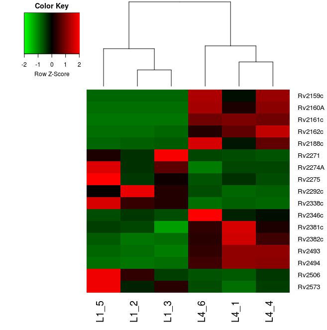

Transcriptomics
Introduction
An application of next-generation sequencing is RNA sequencing (Mortazavi et al., 2008; Wang et al., 2009). In particular we will discuss transcriptome (messenger RNA) sequencing. Transcriptome sequencing is a very useful addition to genome sequencing projects as it helps to identify genes and thus aids in genome annotation. In this sense, it is similar to earlier transcriptome sequencing using capillary methods (EST sequencing), but provides much higher coverage of the transcriptome.
Reads from RNA sequencing can be treated in much the same way as those from DNA sequencing. The exception is in eukaryotes when there is splicing, where a single gene can code for multiple proteins through transcription of determined exons.
Due to the vast number of reads produced by next generation sequencing technology, the transcriptome is also sequenced very deeply. Each gene is sequenced in proportion to its abundance and the large number of reads means that even low abundance genes are sequenced to some extent. This means that expression levels of genes can be compared. One can visualise the "pile up" of reads in a particular region by looking at coverage plots. The higher the signals in the plot, the more expressed a transcript is. It is important to note that the sequences originate from transcriptome samples (mRNA) and therefore only contains information about the exons and untranslated regions (UTRs).
Imagine the following transcript is present in the sample:
Reads belonging to the transcript are produced by the sequencing process. When the reads come out as raw data, there is no information about where they belong in the reference genome. Furthermore, all reads from several different transcripts come out together. An alignment algorithm localises them in the reference genome based on similarity matches.

In the plot, the coverage line represents the number of reads that align to the genome at each base position. This allows us to identify coding regions, here, the 3 exons (in yellow) that comprise the transcript above.
In this module we will use a similar approach used to map DNA sequencing data to map RNA sequencing data from Mycobacterium tuberculosis.
Understanding an organism's genome goes beyond cataloging the genes that are present in the genome. Insight into the biological stages in which each gene is expressed (potentially used) helps us to identify how organisms develop and respond to a particular external stimuli. The first layer of such complex patterns involves the understanding of how the genome is being used is the transcriptome. This is also the most accessible type of information because, like the genome, the transcriptome is made of nucleic acids and can be sequenced relatively easily. Arguably the proteome is of greater relevance to understand cellular biology, but it is chemically heterogenous making it much more difficult to assay.
Over the past two decades, microarray technology has been applied extensively for addressing the question of which genes are expressed and when, enabling the performance of differential expression analysis. Despite its success, this technology is limited in that it requires prior knowledge of the gene sequences for an organism and has a limited dynamic range in detecting the level of expression, e.g. how many copies of a transcript are made. RNA sequencing technology using, for instance Illumina HiSeq machines, can sequence all the genes that are transcribed, and the results have a more linear relationship to the real number of transcripts generated.
The aim of differential expression analysis is to determine which genes are more or less expressed in different situations. We could ask, for instance, whether a bacterium uses its genome differentially when exposed to stress, such as heat or challenged by a drug. Alternatively, we could ask which genes make human livers different from kidneys.
In these exercises, we will try to gain some understanding of differences between M. tuberculosis lineages. The genome of M. tuberculosis was published in 1998 (Cole et al., 1998). It has 4.4 Mb and a high GC content (~65%), comprising 4,111 genes. Although the variability of the M. tuberculosis genome has been considered limited, it has been demonstrated a higher diversity than it was previously thought. Currently, M. tuberculosis is classified in 7 different lineages with a different geographical distribution, and also virulence or spreading capacity has been seen to vary between lineages. Strains from different lineages have shown differences in virulence or in acquisition of drug resistance (Parwati et al., 2010), and these differences might be caused by variable expression of determined genes.
Therefore, the aim of this session is to become familiar with the steps carried out in transcriptomics studies, from mapping RNA-seq reads to the performance of differential expression analysis.
Exercise 1: Mapping RNA-seq with BWA
First, we will map RNA sequence reads from a M. tuberculosis lineage 1 strain to the reference genome, in this case, the H37Rv M. tuberculosis strain.
You can find the M. tuberculosis H37Rv reference genome (called H37Rv.fa) as well as the two files of RNA-seq reads from a lineage 1 strain (Mtb_L1_1.fastq and Mtb_L1_2.fastq) in the transcriptomics directory.
Running BWA
To work with the command line of Linux, you will first need to open a terminal, activate the rnaseq conda environment, go to the data and transcriptomics directory:
conda activate rnaseq
cd ~/data/transcriptomics
And list the files there:
ls
You will find there the 4 fastq files, 2 of them from the lineage 1 sample, and the reference genome fasta file; these are the input data for this practical.
For the mapping, first an index of the reference genome must be constructed with bwa index. On the command line, you should type:
bwa index H37Rv.fa
This will generate 5 files which are needed for BWA. We will then align the RNA-seq reads to the reference genome with bwa mem. We will therefore use the reference genome (in fasta format) and the two fastq files that contain the RNA-seq reads, saving the output to a SAM file. To start you should type:
bwa mem H37Rv.fa Mtb_L1_1.fastq.gz Mtb_L1_2.fastq.gz | samtools sort - -o Mapping_Mtb/Mtb_L1.bam
samtools index Mapping_Mtb/Mtb_L1.bam
Question
We also need to index our bam file. Can you remember how to do this?
We can do this with the following code:
samtools index Mapping_Mtb/Mtb_L1.bam
Exercise 2: Visualising alignments
Now we will examine the reads mapping in IGV. Follow the steps as before:
Launch IGV by running the command igv on a New Terminal and perform the following steps:
- We first need to load the reference genome. To do this click on Genomes -> Load Genome from File.... Navigate to ~/data/transcriptomics/ and select the H37Rv.fa file.
- You can also load the genes by clicking on File -> Load from File..., then selecting the Mtb.gtf file.
- Finally you can load the bam file by clicking File -> Load from File... and selecting the bam file you wish to load.
Interpreting the mapping
This exercise is similar to the one performed before in the Visualisation module. Scroll along the genome and examine the read coverage (the part of the genome mapped goes from position 2420631 to 2920631. To view that part select 'Goto', 'Navigator' and write in 'Goto Base' 2420631). Notice how different genes have different depths of coverage.

Question
Why do some genes have little or no coverage?
They are not being expressed in the given sample.
Question
Why do some reads map where there are no genes?
This could be due to: * Genome annotation incompleteness * Novel transcripts and isoforms * Non-coding RNAs
Including more lineages
One interesting feature of the IGV viewer is the possibility to see more than one BAM file at the same time, which enables to comapre coverage from different samples. Hence, next we want to include more lineages, in this case we will add another sample belonging to the lineage 4 of Mtb.
To do it, we will need first to follow the previous steps in order to get the sorted and index bam files. Therefore, map it with BWA as before, the fastq files are in the directory ~/data/transcriptomics and are called Mtb_L4_1.fastq.gz and Mtb_L4_2.fastq.gz.
Once we have the bam files, we can add it to the IGV viewer using File -> Load from File... and selecting the bam file you wish to load.
In the BAM view of the reads, it might be difficult to distinguish the differences between the BAM files. However, in the coverage plot, one can see the differences in coverage.
One reason to perform RNA-seq under different conditions or in different samples (in this case different lineages of Mtb), is to see genes that are differentially expressed. For example, one gene may be more highly expressed in one lineage that in the other.
Question
Can you find any genes that have differential expression?
Now go to gene Rv2161c (position 2422271).

Question
Would you think that this gene is differentially expressed?
Exercse 3: Differential expression
There are tools that calculate the differential expression, like the R packages DESeq or EdgeR. They take the reads mapped to each gene, normalize the resulting quantities of mapped reads (coverage), and then estimate if any genes are differentially expressed. In general, the results are more credible and significant if biological replicates are included.
Counting reads with HTSeq-count
In order to perform a differential expression analysis, the first step is to count the reads mapped to each of the genes so that we can make comparisons between the different samples.
HTSeq-count is part of the HTSeq package which will quantify the number of reads mapping to gene models in different RNA-seq experiments given a file with aligned sequencing reads (the bam file obtained through BWA) and a list of genomic features (the Mtb.gtf file with the gene annotation).
We will run HTSeq-count with the RNA-seq data from the L1 and L4 strains we were using in the previous exercises. To do it, we will go to the directory where we have the data and use the following command:
cd ~/data/transcriptomics
python -m HTSeq.scripts.count -f bam -r pos -s reverse -t gene ./Mapping_Mtb/Mtb_L1.bam Mtb.gtf > ./Mapping_Mtb/Mtb_L1_htseq_count.txt
python -m HTSeq.scripts.count -f bam -r pos -s reverse -t gene ./Mapping_Mtb/Mtb_L4.bam Mtb.gtf > ./Mapping_Mtb/Mtb_L4_htseq_count.txt
The parameters we have used in the HTSeq-count command are:
- -f: format of the input data
- -r: how is sorted the data
- -s: whether the data is from a strand-specific assay. The reverse option is used for pair-end reads from HiSeq in order to mantain the strain-specificity (the reads have to map to the gene in the corresponding strand to be counted)
- -t: feature type, in this case exon
If you have any doubt about the parameters of the program, type:
python -m HTSeq.scripts.count
Question
What would -a parameter do?
Ensures HTSeq-count skips all reads with alignment quality lower than the given minimum value.
We can now take a look at the results from the HTSeq-count typing the following in the command line:
cd ~/data/transcriptomics/Mapping_Mtb
less Mtb_L1_htseq_count.txt
You should see two columns with the list of genes and the counts for each gene.
Terminal output
Rv2158c 0
Rv2159c 22
Rv2160A 11
Rv2160c 0
Rv2161c 193
Rv2162c 753
Rv2163c 6181
Rv2164c 2169
Rv2165c 6878
Rv2166c 11357
Rv2167c 0
Rv2168c 0
Rv2169c 3017
Rv2170 235
Rv2171 1779
Rv2172c 9812
Rv2173 1525
Rv2174 1828
Rv2175c 767
Rv2176 1440
Rv2177c 169
Rv2178c 6200
Rv2179c 205
Rv2180c 319
Rv2181 4288
Rv2182c 10635
Rv2183c 1197
:
To exit this view you just need to type 'q'.
Finding differentially expressed genes with DESeq2
Now we are going to perform a differential expression analysis in order to look for genes with variable expression between lineages. To do it we will use 6 sequenced samples, 3 from lineage 1 and 3 from lineage 4. Two of them will be the two analysed in the previous steps. We are going to use an R package for the anaylsis of the differential gene expression called DESeq2.
A differential expression analysis is used to compare gene expression levels, given by the number of reads per gene (obtained by HTSeq-count) between samples (for example, between 2 lineages of Mtb). In order to accurately ascertain which genes are differentially expressed, and the amount of expression, it is necessary to use replicated data. As with all biological experiments doing it once may simply not be enough. There is no simple way to decide how many replicates to do, it is usually a compromise of statistical power and cost. By determining how much variability there is in the sample preparation and sequencing reactions we can better assess whether genes are really expressed and more accurately determine any differences. The key to this is performing biological rather than technical replicates. This means, for instance in tuberculosis, growing up three cultures of bacteria, treating them all identically, extracting RNA from each and sequencing the three samples separately. Technical replicates, whereby the same sample is sequenced three times do not account for the variability that really exists in biological systems or the experimental error between cultures of bacteria and RNA extractions. More replicates will help to improve statistical power for genes that are already detected at high levels, while deeper sequencing will improve power to detect differential expression for genes which are expressed at low levels. In this exercise we will consider the 3 L1 and the 3 L4 samples as biological replicates.
To start, we firstly need a table with the counts. In the Mapping_Mtb directory (where we should be) we can find a folder called HTSeqCounts with 6 files called:
cd ~/data/transcriptomics/Mapping_Mtb/HTSeqCounts
ls
Terminal output
Mtb_1_L4_htseq_count.txt Mtb_3_L1_htseq_count.txt Mtb_5_L1_htseq_count.txt
Mtb_2_L1_htseq_count.txt Mtb_4_L4_htseq_count.txt Mtb_6_L4_htseq_count.txt
Now, to start, we need to open R in the terminal, just typing:
R
And then load the packages we are going to need for the analysis:
library(DESeq2)
library(gplots)
These 6 files are the results of the HTSeq-count of the two samples previously analysed plus 4 more Mtb samples we will use to perform the analysis.
To prepare the data we are going to use the following scripts.
First we are going to set the directory where we have the files:
directory <- "~/data/transcriptomics/Mapping_Mtb/HTSeqCounts/"
And now we can select the files and save them in the variable ‘sampleFiles’ by selecting all the files that contain "Mtb" that are present in our directory:
sampleFiles <- grep("Mtb", list.files(directory), value = TRUE)
As we are comparing lineage 1 to lineage 4 samples, we are going to set up lineage as "condition".
sampleCondition <- c("l4","l1","l1","l4","l1","l4")
Now we construct the table with the sample information and convert it in a DESeq object:
sampleTable <- data.frame(
sampleName = sampleFiles,
fileName = sampleFiles,
condition = sampleCondition
)
dds <- DESeqDataSetFromHTSeqCount(
sampleTable = sampleTable,
directory = directory,
design = ~ condition
)
Before doing the analysis, we are going to filter the dataset keeping only the genes with at least 10 counts, so that we make sure that every gene considered for the analysis was transcribed.
To do it, type the following:
keep <- rowSums(counts(dds)) >= 10
dds <- dds[keep,]
And we are going to set up the condition for the analysis in two levels which are 'lineage 1' and 'lineage 4':
dds$condition <- factor(dds$condition, levels = c("l1","l4"))
We can then run the differential expression anaylisis by calling the function DESeq(), which will normalise the data and compare between the two groups established (l1 and l4). We can store the results in a variable called 'res':
dds <- DESeq(dds)
res <- results(dds)
Let's take a look at the results. Type:
res
And you should get a table like this:
Terminal output
log2 fold change (MLE): condition l4 vs l1
Wald test p-value: condition l4 vs l1
DataFrame with 441 rows and 6 columns
baseMean log2FoldChange lfcSE stat pvalue padj
Rv2159c 1251.0885 6.5961892 0.5609037 11.759933 6.278432e-32 9.208368e-30
Rv2160A 766.1015 6.6738839 0.5544491 12.036965 2.271613e-33 4.997548e-31
Rv2161c 5336.3523 5.8122020 0.4210642 13.803600 2.424369e-43 1.066722e-40
Rv2162c 4784.6386 3.8915692 0.3784335 10.283364 8.375204e-25 9.212724e-23
Rv2163c 3616.8513 -0.5480522 0.3940154 -1.390941 1.642434e-01 9.243213e-01
... ... ... ... ... ... ...
Rv2586c 3828.546 0.16674016 0.3612166 0.4616071 0.6443631 0.9964280
Rv2587c 5655.191 0.21607557 0.3636699 0.5941530 0.5524098 0.9964280
Rv2588c 1305.013 -0.02030647 0.4871420 -0.0416849 0.9667499 0.9983353
Rv2589 1665.930 0.25845265 0.3629410 0.7121064 0.4763989 0.9964280
Rv2590 5873.482 0.42707857 0.6169747 0.6922141 0.4888029 0.9964280
The first column represents the name of each gene analysed, which are represented in rows.
Question
How many genes did we analyse?
441
Let's take a look at the summary of the results we just obtained:
summary(res)
Terminal output
out of 441 with nonzero total read count
adjusted p-value < 0.1
LFC > 0 (up) : 10, 2.3%
LFC < 0 (down) : 7, 1.6%
outliers [1] : 1, 0.23%
low counts [2] : 0, 0%
(mean count < 2)
[1] see 'cooksCutoff' argument of ?results
[2] see 'independentFiltering' argument of ?results
When asking whether a gene is differentially expressed we use statistical tests to assign a p-value. If a gene has a p-value of 0.05 we know that there is only a 5% chance that it is not really differentially expressed. However, if we are asking this question for every gene in the genome, then we would expect to see due to multiple comparison, p-values less than 0.05 for many genes even though they are not really differentially expressed. Due to this statistical problem we must correct the p-values so that we are not tricked into accepting a large number of erroneous results. Adjusted p-values are p-values which have been corrected for what is known as multiple hypothesis testing.
The summary shows us the number of genes with an adjusted p-value < 0.1 that are under or over expressed in one of the groups (log2FoldChange above or below 0, here represented as LFC). The adjusted p-value in the DESeq analysis is equivalent to the FDR or 'False Discovery Rate'. This value represents the proportion of discoveries that we can expect to be false.
Question
Which is the maximum percentage of "false discoveries" that we can expect given a cut off adjusted p-value of 0.1?
10%
Question
How many genes are up and down-regulated with an adjusted p-value < 0.1?
10 genes are up-regulated. 7 genes are down-regulated.
Some of the p-values in our results might be NA values, which can be due to extreme outliers. To continue with the analysis we are going to remove these missing values.
res <- res[!is.na(res$padj),]
Let's now order the results by p value, so we see the top genes with the highest statistial significance. Take a look at the results again.
resOrdered <- res[order(res$pvalue),]
resOrdered
To visualise the diffences in expression we are going to plot a heatmap using the 17 genes that are above the cut off. To do it, we will first get the normalised counts in a variable called "counts_heatmap". We will copy the names of the first 17 genes from our "resOrdered" table in a vector, and then extract the normalised counts from "counts_heatmap" for the 17 genes we want to plot.
counts_heatmap <- counts(dds, normalized = TRUE)
idx <- rownames(resOrdered)[1:17]
counts_heatmap <- counts_heatmap[rownames(counts_heatmap)%in%idx,]
If we type:
counts_heatmap
We can see the table with the normalised counts for each sample and each of the genes of our interest.
Terminal output
Mtb_1_L4_htseq_count.txt Mtb_2_L1_htseq_count.txt
Rv2159c 1061.02472 16.090459
Rv2160A 933.18297 8.045229
Rv2161c 10927.68994 141.157208
Rv2162c 8503.01996 550.732527
Rv2188c 1643.41488 495.147306
Rv2271 804.10604 1115.361360
Rv2274A 57.43615 68.018758
Rv2275 2069.55403 1757.516950
Rv2292c 54.96577 263.298419
Rv2338c 1439.60920 3638.637880
Rv2346c 1742.22976 1260.175491
Rv2381c 5656.53398 1778.727101
Rv2382c 2140.57722 623.139593
Rv2493 2611.18306 308.644258
Rv2494 1635.38617 244.282423
Rv2506 345.23447 993.220149
Rv2573 31.49724 71.675681
Mtb_3_L1_htseq_count.txt Mtb_4_L4_htseq_count.txt
Rv2159c 34.44955 3070.71886
Rv2160A 25.05422 1716.06570
Rv2161c 122.13932 10217.41567
Rv2162c 685.85926 12248.53695
Rv2188c 595.03771 3311.94670
Rv2271 3936.64424 797.08204
Rv2274A 147.19354 55.37080
Rv2275 3592.14872 1232.32231
Rv2292c 140.92998 62.66773
Rv2338c 3335.34297 1310.44236
Rv2346c 908.21546 2235.00602
Rv2381c 466.63484 3045.82346
Rv2382c 654.54148 1449.94245
Rv2493 184.77487 2647.49705
Rv2494 266.20108 1598.45639
Rv2506 494.82084 499.19570
Rv2573 112.74399 57.08773
Mtb_5_L1_htseq_count.txt Mtb_6_L4_htseq_count.txt
Rv2159c 30.57068 3293.67692
Rv2160A 16.98371 1897.27712
Rv2161c 302.31010 10307.40137
Rv2162c 577.44627 6142.23638
Rv2188c 343.07102 4986.18078
Rv2271 1837.63783 871.00738
Rv2274A 220.78828 26.91855
Rv2275 9847.15722 1075.78064
Rv2292c 125.67948 71.62257
Rv2338c 5896.74541 1217.10303
Rv2346c 886.54986 8732.18549
Rv2381c 1895.38245 3401.35112
Rv2382c 740.48992 1372.36538
Rv2493 377.03844 1754.03197
Rv2494 261.54919 1206.52789
Rv2506 1864.81177 392.72242
Rv2573 220.78828 49.03022
To plot the heatmap copy the following script:
colnames(counts_heatmap) <- c("L4_1","L1_2","L1_3","L4_4","L1_5","L4_6")
heatmap.2(as.matrix(counts_heatmap), scale="row", col=greenred(75), Rowv=NA, dendrogram = "col", trace="none", density.info = "none")
You should get a plot like this:

Question
Do the samples cluster by lineage in the dendrogram?
Yes
As you can see in the color key, red cells in the plot represent overexpressed genes whilst green ones the underexpressed genes. Rows represent the 17 genes of interest and columns the 6 samples we are analysing.
Question
How is Rv2493 in lineage 4 samples? And Rv2159c in lineage 1?
Rv2493 is over expressed in 2 out of 3 lineage 4 samples and Rv2159c is under expressed in all lineage 1 samples
Take a look at the first 5 genes in the plot. As you might assume by the numbers they are located in the genome one after the other. Which potential explanations would you give to their down-regulation in one of the lineages?
Further exploration
What do I do with a gene list?
As we have just seen, differential expression analysis results is a list of genes which show differences between two conditions. It can be daunting trying to determine what the results mean. On one hand you may find that due to there being no real differences or there being too much noise in your experiment, you have no significant differences. On the other hand, you may find thousands of genes are differentially expressed. What can you say about that?
Other than looking for genes you expect to be different or unchanged, one of the first things to do is look at Gene Ontology (GO) term enrichment. There are many different algorithms for this, but you should annotate your genes with functional terms from GO using for instance Bast2GO (Conesa et al., 2005) and then use perhaps TopGO (Alexa et al., 2006) to determine whehter any particular sorts of genes occur more than expected in your differentially expressed genes.
References
Mortazavi A, Williams BA, McCue K, Schaeffer L, Wold B. (2008). Mapping and quantifying mammalian transcriptomes by RNA-Seq. Nat Methods 5(7):621-8. doi: 10.1038/nmeth.1226
Wang Z, Gerstein M, Snyder M. (2009). RNA-Seq: a revolutionary tool for transcriptomics. Nat Rev Genet 10(1):57-63. doi: 10.1038/nrg2484
Cole ST, Brosch R, Parkhill J, Garnier T, Churcher C, Harris D et al. (1998). Deciphering the biology of Mycobacterium tuberculosis from the complete genome sequence. Nature 393(6685):537-44.
Parwati I, van Crevel R, van Soolingen D. (2010) Possible underlying mechanisms for successful emergence of the Mycobacterium tuberculosis Beijing genotype strains. Lancet Infect Dis 10(2):103-111. doi: 10.1016/S1473-3099(09)70330-5
Conesa A, Gotz S, Garcia-Gomez JM, Terol J, Talon M, Robles M. (2005) Blast2GO: a universal tool for annotation, visualization and analysis in functional genomics research. Bioinformatics 21(18):3674-6.
Alexa A, Rahnenfuhrer J, Lengauer T. (2006). Improved scoring of functional groups from gene expression data by decorrelating GO graph structure. Bioinformatics 22(13):1600-7.